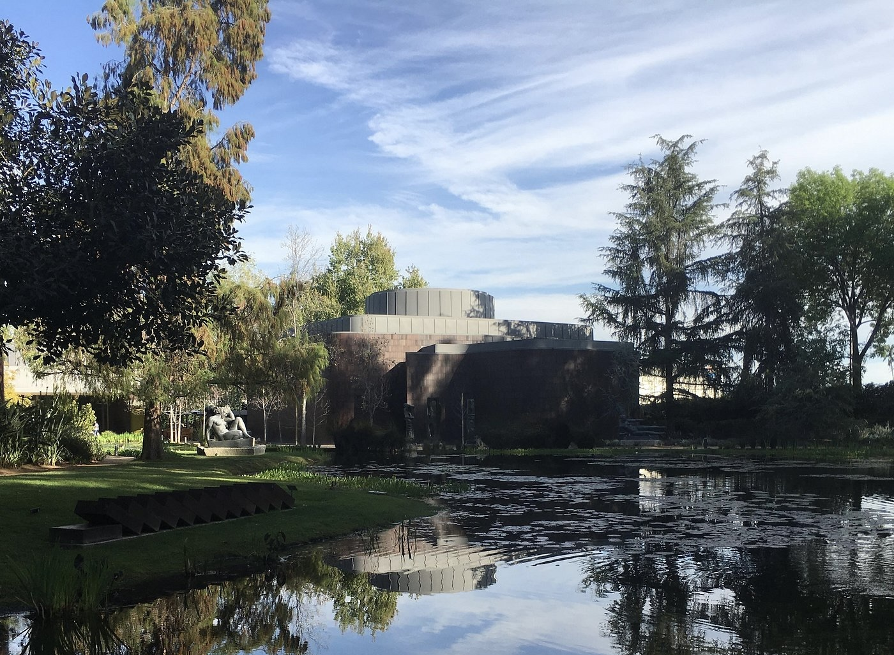
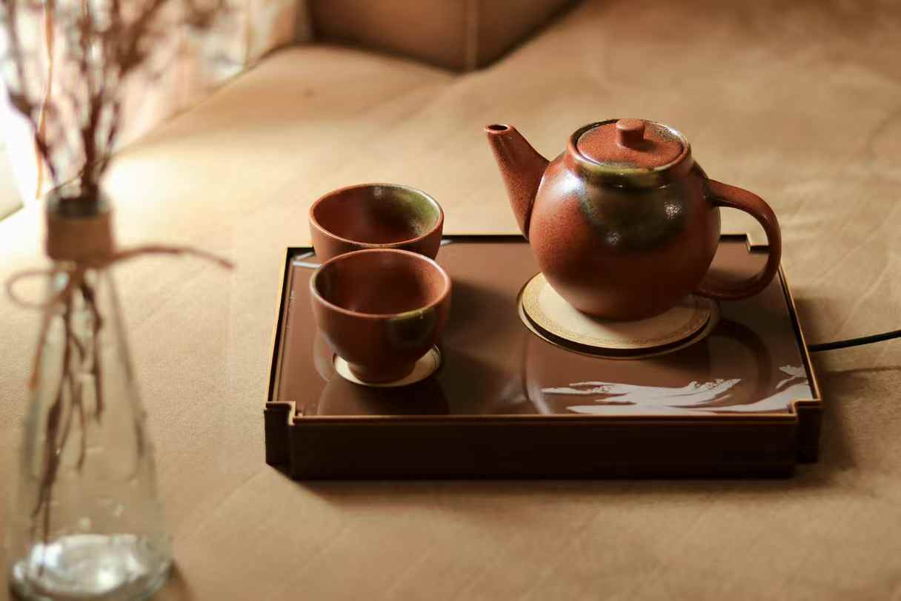
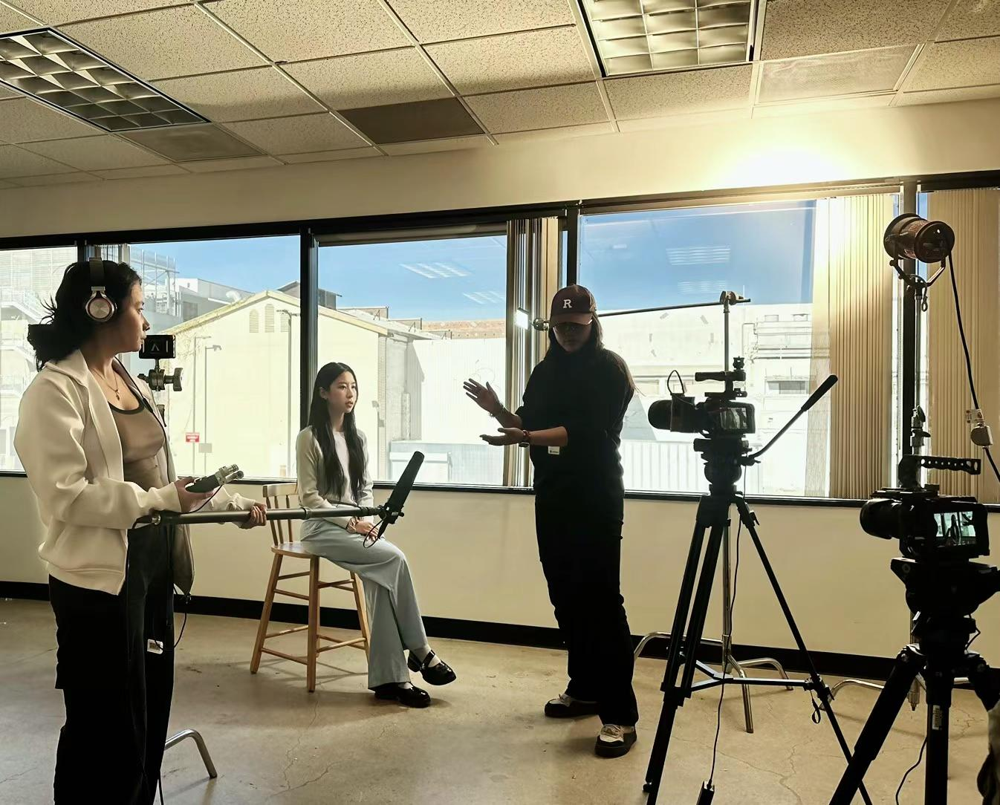

On Process,
Patience & Tea
A conversation about foundation courses, the real meaning of "complete," and one piece of advice she wishes someone had given her on day one.
February 24 2026 · Interview by Alicia Jia


Sabrina
21yrs old
8th term interaction design student
Sabrina came to California from China for high school and stayed for the weather, the community, and eventually, ArtCenter. She's now in her final semester — and had a lot to say about the journey here.
Why did you choose ArtCenter?
“In high school, my design teacher showed me a list of schools — ArtCenter, Calarts, Parsons, Pratt, and after looking through all of them, I felt like ArtCenter was the best fit for the IxD major. It ranked well, too. But honestly, a big part of it was California. I went to high school here, and I just didn't want to leave. The weather is also a factor — California is so dry that I've barely had any flare-ups since I got here. And there's a big Chinese community, which makes it feel more like home.
Do you have a favorite museum in L.A.?
I haven't been to that many, I've been to the Huntington Library, but I highly recommend the Norton Simon Museum. A lot of ArtCenter classes do field trips there, and you can get in free with your student ID. It has a beautiful collection across two or three floors, and outside there's a garden an outdoor garden reminiscent of Monet’s garden, which is stunning in the summer and great for inspiration.

What was the most important class you took at Art Center?
I'd say the earlier ones, around Term 2 and Term 3. They teach a lot of foundational things: prototyping, interface design, the full design process. The higher-level courses either push you toward more immersive directions — VR, AR, or give you complete freedom to develop projects for your portfolio. Both are great, but the foundation is what everything else builds on.
Each step of the process actually has a dedicated course. Research has its own class around Term 3. User testing has one too — I think it's called HCI. Then there are separate courses for prototyping and for interface design, covering both UI and UX. So by the time you reach the upper terms, you're really confident about handling each stage.
How did your mindset shift over the course of four years?
In the first term, everyone seems impossibly talented — classmates and instructors alike. You feel overwhelmed, anxious about how much you don't know yet. But as you take on more projects, you develop a sense of control. You start to understand how much time research actually takes, how to scope a prototype, what to expect from a user test.
Later on, you even start forming your own opinions about instructors — you understand where their aesthetic sensibilities lie. I think that's when you know you've really grown.
"You stop being intimidated by the process and start owning it."
Can you tell us about a recent project?
I made a tea ceremony conversation set for my Interaction Prototype class — it's more of a physical prototype than an interface project. The idea was a sensor-equipped tea tray: when you pick up the teacup, the sensor activates voice input, and when you set it down, your words are sent to an AI for a response.

Tea in Chinese culture has always been tied to socializing, so I wanted to merge that ritual with the experience of conversation. Most of our chats now happen on screens,so I wanted to bring it back to something physical, something you can hold in your hands.
Here's how it works: while the water heats, about three minutes, the system walks you through an onboarding experience. Once the tea is ready and you pour a cup, a conversation topic appears on screen as an icebreaker — something like "What's your favorite movie?" Then you pick up the cup to speak, take a sip, and set it down to signal you're done. The AI responds, and you go back and forth from there. Whenever you want to talk, just pick up the cup.
How do you define a "complete" project?
For me, it's when your user test has zero issues. Your target user can use whatever you've built, an app, a feature, anything — with absolutely no friction. It's smooth, they know exactly what they're doing. That's what completeness means to me.
"Completeness isn't about checking every step in the process. It's about whether the thing actually works for your target user."
Some people think you need the full package of research, UI, prototype, deployment to call a project complete. But honestly, what you put in your portfolio doesn't have to be end-to-end. It can be a single micro-interaction on one page. I've seen people whose entire portfolio piece is one animation in one app. At first I was shocked — that counts? But it really does, and there's surprising depth to it. How many iterations it took, what kind of feeling it creates. Those fine details matter enormously.

Do you have any advice for your past self?
Yes, absolutely — I've been waiting to say this one.
Front-load your courses Take as many classes as you can during the lower terms — five or six per semester if possible, summers included. While you still have the energy and motivation, load up. Because by Term 3 or 4, you won't be able to pull all-nighters anymore. Your body just won't let you. Your motivation dips. If you've already banked enough credits early on, you can afford to drop a class when you need to and still graduate on time.
And cap your studios Studios are five-hour sessions. Don't take more than three or four in one semester, four is genuinely the absolute max if you care about your wellbeing.
Give yourself permission to slow down later I loaded up like crazy in my early semesters — didn't even take summers off. Then later, I burned out. But it was okay, because I'd already done most of the work. Every semester toward the end, I dropped one class. And I still graduated on schedule.
"I'm really grateful to my past self for frontloading. It gave me choices when I needed them most."